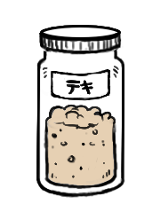

starter
Sourdough bread has been arounds for a long time. People are still making it today, even with the existence of baker's yeast.
The fermentation required to prepare it improves the flavor of the dough, and makes it easier for the body to absorb the dietary minerals present in the grains.
Making sourdough bread begins with a sourdough starter. The starter is a fermenting mixture of flour and water containing microorganisms which include wild yeast and lactobacilli. The yeast produces carbon dioxide which leavens the dough, and the lactobacilli produce lactic acid which contribute flavor. The process is simple, it requires more waiting than active cooking time.
To find out how to make sourdough starter, see these instructions.
On the illustration, is the word テキ (teki) in Japanese Katakana, which is the name of our own sourdough starter.
flour
Flour is a powder made by grinding raw grains, roots, beans, nuts, or seeds. It is used to make many different foods. Cereal flour is the main ingredient of bread, which is a staple food for most cultures. Wheat is the most common base for flour, as is corn flour and rye flour. Cereal flour consists either of the endosperm, germ, and bran together (wholegrain wheat flour) or of the endosperm alone (all purpose flour).